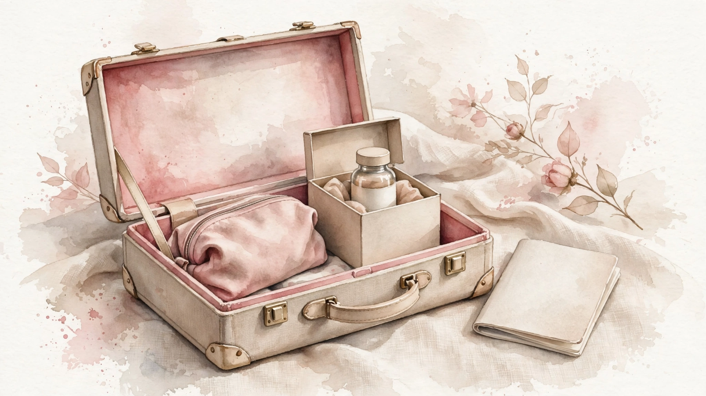

トップ ＞ インナーケア・サプリ ＞ 海外旅行にサプリを持っていくときの確認点
海外旅行にサプリを持っていくときの確認点

海外旅行の荷物に、いつものサプリメントを入れる方は多いと思います。ただ、海外への持ち運びは、国内旅行とは確認点が少し違います。食品や成分の扱いは国ごとに異なるため、出発前の確認が大切です。この記事では、海外旅行にサプリメントを持っていくときの確認点を整理します。
前提：持ち込みの扱いは、国ごとに違う
サプリメントは日本では食品として販売されていますが、成分の扱いや持ち込みの条件は、国によって異なります。日本で普通に買えるものでも、渡航先では扱いが違う場合があります。出発前に、渡航先の大使館や税関などの公的な案内で、持ち込みの可否を確認してください。
確認の際は、商品名だけでなく、原材料名や含有成分が分かる情報があると話が早くなります。パッケージ裏の表示の写真を撮っておく、メーカーの公式ページで成分情報を控えておく、といった準備が役立ちます。
容器は元のまま、表示ごと持っていく
海外旅行では、ピルケースへの移し替えは避け、元の容器のまま持っていくのが基本です。表示のない粒だけでは、それが何なのかを自分でも説明できません。元の容器であれば、商品名も成分表示もそろっており、確認を求められた場面でも情報がそろっています。
量は、滞在日数分を目安にし、予備は少しだけにします。大きな容器ごと持ち歩くより、日数分が入ったサイズを選ぶか、元の容器のまま必要量を持っていく形が現実的です。服薬中の方は、薬とサプリメントの扱いを分けて考え、薬については医師や薬剤師の案内に従ってください。
機内と預け荷物、時差の日の考え方
置き場所は、手荷物と預け荷物で環境が違います。温度の変化が気になるタイプは、保管表示を確認したうえで、どちらの荷物に入れるかを決めてください。ドリンクタイプは液体物の扱いになる場合があるため、航空会社の案内も確認しておくと安心です。
時差のある渡航先では、飲むタイミングを現地の食事の流れに置き直すのが現実的です。時刻に厳密に合わせようとせず、現地の朝食後・夕食後といった食事のリズムに置く方が、旅先でも無理がありません。旅の準備は、表示の確認から始まります。
旅先での扱いと、帰国後の残り
旅先では、ホテルの部屋の温度や湿度も、日本の自宅とは条件が違います。保管表示を確認し、直射日光の当たる窓際や、浴室のような湿気の多い場所を避けて置いてください。体調を崩したときは、無理にいつも通り飲もうとせず、休む判断を優先します。
帰国後に残った分は、元の容器に戻して通常の保管に戻します。旅の途中でピルケースなどに移し替えた分がある場合は、残りを長期保管せず、早めに使い切る計画にしてください。持ち込みに必要な書類があるかどうかも含め、分からない点は出発前に公的な案内で確かめることが、旅先での慌てを防ぎます。
同行者と荷物を分け合う場合も、サプリメントは自分の荷物の中で完結させるのが基本です。誰のものか分からない粒が混ざると、旅先では確認のしようがありません。表示ごと、容器ごと、が海外旅行での合言葉です。
サプリメントの持ち込みの可否や条件は、国や成分によって異なります。渡航前に、渡航先の大使館・税関などの公的な案内で必ず確認してください。
出発前の準備では、滞在日数と予備の量を紙に書き出しておくと、荷造りの段階で過不足に気づけます。渡航先で買い足すことは前提にしない方がよいため、日数分の計算は国内旅行以上に丁寧に行ってください。
乗り継ぎのある行程では、荷物の置き場所が途中で変わることもあります。温度の条件が気になるタイプは、行程全体を通して条件を保てる置き方を選んでください。
セラフィナ「旅の準備は表示の確認から。国ごとの案内チェックも忘れずにね」